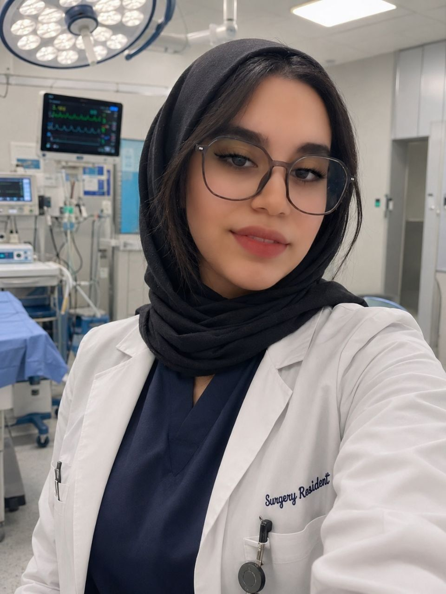

سردرد و میگرن
تشخیص علت انواع سردرد و طراحی پروتکل درمانی اختصاصی برای میگرن مزمن.
دکتر عسل گودرزی — متخصص مغز و اعصاب و فلوشیپ سردرد؛ سالها تجربه در تشخیص و درمان اختلالات عصبی، با رویکردی دقیق، شفاف و بیمارمحور.

متخصص مغز و اعصاب | فلوشیپ سردرد و میگرن
دکتر گودرزی پس از پایان دورهی پزشکی عمومی و تخصص نورولوژی، سالها در مراکز تخصصی علوم اعصاب به تشخیص و درمان بیماران پرداخته است. رویکرد ایشان ترکیبی از دانش روز، معاینهی دقیق بالینی و گفتوگوی شفاف با بیمار است.
ایشان معتقدند درمان مؤثر از جایی آغاز میشود که بیمار بهدرستی درک کند چه اتفاقی در بدنش رخ میدهد؛ به همین دلیل آموزش بیمار بخش جداییناپذیر پروتکل درمانی ایشان است.
تشخیص دقیق و درمان اختصاصی، متناسب با شرایط هر بیمار
تشخیص علت انواع سردرد و طراحی پروتکل درمانی اختصاصی برای میگرن مزمن.
پایش دارویی دقیق، ثبت EEG و برنامهی درمان بلندمدت برای کنترل کامل حملات.
مدیریت لرزش، سفتی و اختلالات حرکتی با جدیدترین پروتکلهای درمانی روز.
پیگیری دورهای منظم، کنترل عود بیماری و تلاش برای حفظ کیفیت زندگی.
درمان بیخوابی، آپنه خواب و اختلالات ریتم شبانهروزی بدن.
درمان گزگز، سوزش و ضعف ناشی از آسیب اعصاب محیطی.
دانشگاه علوم پزشکی تهران
دانشگاه علوم پزشکی تهران
مرکز تحقیقات سردرد
شرکت فعال در همایشها و دورههای بازآموزی
ویزیت، پذیرش و پیگیری بیماران سرپایی و بستری
از طریق فرم همین صفحه تاریخ، ساعت و نوع ویزیت را مشخص کنید. درخواست شما ثبت و برای تأیید نهایی با شما تماس گرفته میشود.
معمولاً بین ۳۰ تا ۴۵ دقیقه؛ چون شرح حال دقیق، معاینهی کامل عصبی و توضیح شفاف برنامهی درمان بخشی از اولین ویزیت است.
بله، در فرم رزرو میتوانید گزینهی «آنلاین (تصویری)» را انتخاب کنید. ویزیتهای اولیه ترجیحاً حضوری انجام میشود.
بله، حتماً. وجود اسناد پزشکی قبلی به تشخیص دقیقتر کمک میکند و از تکرار بیدلیل آزمایشها جلوگیری میشود.
لیست بیمههای طرف قرارداد هنگام رزرو نوبت به شما اعلام میشود؛ برای اطلاع دقیق با پذیرش مطب تماس بگیرید.
تاریخ و ساعت دلخواه را انتخاب کنید؛ در اسرع وقت برای تأیید نهایی با شما تماس میگیریم.